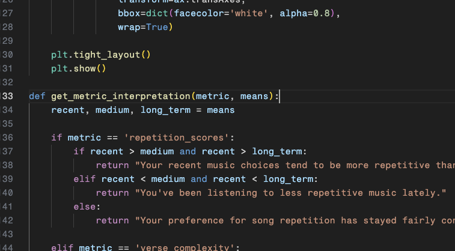
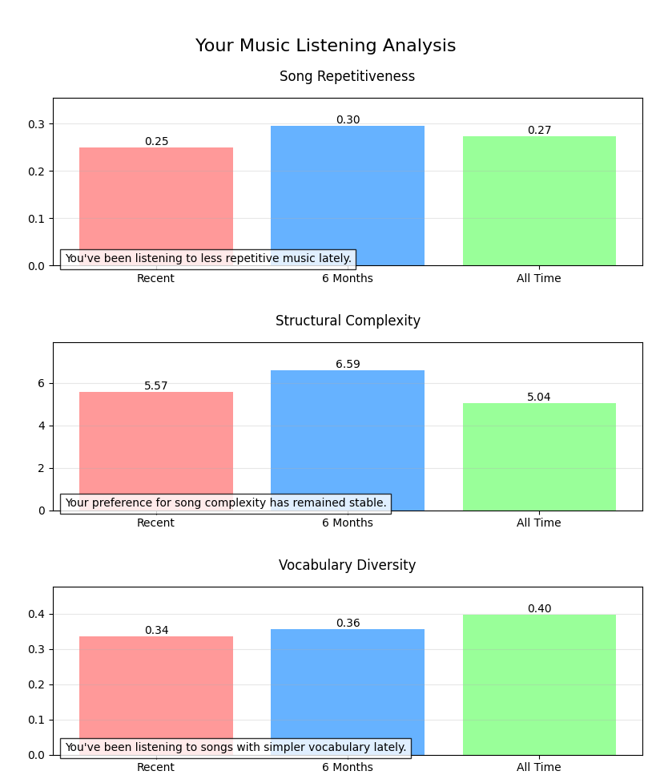

Data Analysis: Do I Care About Lyrics?
BACKGROUND
I love listening to music. I enjoy hearing beautiful melodies, exquisite
sound design, and overall out-of-the-box production techniques that push
the boundaries outward.
However, I find that I don't always pay attention to the lyrics. Whenever
I listen to music with friends, I often find that they would be quick to
point out a lyric in a song that may stand out, whether it be good or bad.
My response to this would usually be me not even realizing it was in the
song in the first place! 🤷♂️ Because of this, I decided to analyze my
Spotify stats to see if it actually reflects my tendency to not care about
lyrics.
FETCHING TOP TRACKS FROM SPOTIFY
I used the Spotify API to access my listening history. After signing up
for an API key at the
Spotify for Developers
page, I was able to use
Spotipy to access my top
artists, top tracks, and metadata for each song.

Top tracks are stored in three separate ranges, short-term (4 weeks),
medium-term (6 months), and long-term (all-time).

I decided to store all of this data in a .csv file so that my main
comparison for data analysis would be between the time ranges.

FETCHING LYRICS FROM GENIUS
Now that I have all of my top tracks, I need to fetch the lyrics of each
song. I decided to use
LyricsGenius
for this, as I can easily match the metadata from the .csv file to quickly
obtain all of the lyrics.

Just like Spotipy, all I needed to do was sign up for an API key. From
there, I was able to save all of the lyrics in a .json file.

LYRIC ANALYSIS
Scraping Spotify and Genius was the easy part; now comes the lyric
analysis. My main three metrics to decipher if I care about lyrics or not
were:
-
Q1: How much of what I listen to is just repeated / barebones lyrics?
(Line Repetition)
-
Q2: How much of what I listen to contains complex verses? (Verse
complexity)
-
Q3: How much of what I listen to contains unique words? (Word
diversity)

-
A1: Lyric repetition was calculated by splitting the lyrics into lines
and simply counting if the lines were repeating.
-
A2: Complex verses were analyzed in each song by counting how many
unique verses exist.
-
A3: Unique words were calculated by finding the ratio of how many
times a word appears and comparing it to the all of the words.
DATA VISUALISATION
Now that the lyrics were analyzed, it's time to visualise the data. I
mainly used
Matplotlib to visualise the data,
opting to maximise readability by creating bar charts for each listening
range. I even decided to display metric interpretations depending on how
each range compares to each other.

ANALYSIS RESULTS
With everything setup, it was finally time to display the data! All I had
to do was run my python program to analyze the lyrics. The output was
three graphs generated by Matplotlib, and the results ended up surprising
me...

Comparing my overall top tracks with my recent top tracks, I can see that
my overall listening habits have gravitated towards my subconscious caring
for lyrics. I've been listening to less repetitive and more complex songs,
albeit with a lot less vocabulary diversity, which is what surprised me
most.
EXPERIENCE AND FINDINGS
This project was a fun way for me to combine my passion of music along
with coding and data visualisation in order to try and find introspective
answers to how my listening to music has changed over time.
I learned a lot about using different API's in conjunction with each other
along with file creation between them. Furthermore, I learned even more
about how to analyse and visualise data to align it with my own criteria
and present it in a way that is easy to understand
Moving forward, I'd like to try and refine my methods of analysing data in
comparison with a set criteria. I'd also like to explore more ways in
improving how I can visualise data, specifically with more eye-catching
models and interactivity.